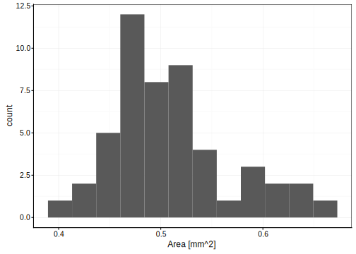

7.2 Lois de distributions
Etant donné que les sciences des données reposent sur un nombre (si possible important) de répétitions d’une mesure -des réplicas-, il est possible de déterminer à quelle fréquence un événement E se produit de manière expérimentale. La probabilité observée est quantifiable sur base d’un échantillon comme nous venons de le voir dans la section précédente. La probabilité théorique est connue si le mécanisme sous-jacent est parfaitement connu. Donc, en situation réelle, seule la probabilité observée est accessible, et ce n’est qu’une approximation de la vraie valeur, ou valeur théorique. Cependant, dans des situations particulières les statisticiens ont calculé les probabilités théoriques. Ce sont des lois de distribution. Elles associent une probabilité théorique à chaque événement possible.
La comparaison des probabilités théoriques et observées constitue l’un des piliers des statistiques. Le raisonnement est le suivant : si les probabilités observées sont suffisamment proches des probabilités théoriques, alors, nous pouvons considérer que les événements sont générés selon un mécanisme identique ou proche de celui qui est à la base de la loi de distribution théorique correspondante.

Même dans la vie de tous les jours, les calculs de probabilités peuvent être utiles, enfin… d’après xkcd.
Avant d’explorer ces lois de distributions statistiques, nous devons d’abord introduire la distinction entre probabilité discrète et probabilité continue. Une probabilité discrète est associée à une variable qualitative ou à la rigueur, à une variable continue discrète qui peut prendre un nombre fini -et généralement relativement petit- de valeurs. A chaque valeur est associé un événement, et chaque événement a une certaine probabilité de se produire dans un contexte donné. Jusqu’à présent, nous n’avons traité que ce cas-là. Par contre, une variable quantitative continue peut prendre un nombre infini de valeurs matérialisées généralement par l’ensemble des nombres réels. Dans ce cas, l’association d’un événement à une valeur de la variable, et d’une probabilité à chaque événement reste vraie en théorie. Mais en pratique, ces probabilités dites continues ne sont pas calculables par les équations étudiées jusqu’ici. Par contre, les lois de distributions continues permettent des calculs, moyennant une petite astuce que nous étudierons plus loin dans ce chapitre.
7.2.1 Distribution uniforme
La loi de la distribution uniforme se rapporte à un mécanisme qui génère tous les événements de manière équiprobable.
7.2.1.1 Distribution uniforme discrète
Dans le cas d’événements discrets, si \(n_E\) est le nombre total d’événements possibles, la probabilité d’un de ces événements vaut donc :
\[\mathrm{P}(E) = \frac{1}{n_E}\]
La distribution uniforme est d’application pour les jeux de hasard (dés, boules de lotto, …). En biologie, elle est plus rare. Dans le cas d’un sexe ratio de 1:1 (autant de mâles que de femelles), la probabilité qu’un nouveau né soit un mâle ou une femelle suit une distribution uniforme et vaut 1/2. La distribution spatiale des individus dans une population biologique peut être uniforme lorsque les individus interagissent de telle manière que la distance entre eux soit identique (par exemple, dans un groupe de manchots Aptenodytes patagonicus sur la banquise). Imaginons un animal hypothétique pour lequel la portée peut être de 1 à 4 petits de manière équiprobable. Nous avons alors 1/4 des portées qui présentent respectivement, 1, 2, 3 ou 4 petits (Fig. 7.1).
Figure 7.1: Probabilité du nombre de petits dans une portée qui suivrait un distribution strictement uniforme entre 1 et 4.
7.2.1.2 Distribution uniforme continue
D’emblée, nous pouvons facilement démontrer quel est le problème avec les probabilités dans le cas de la distribution uniforme continue. Nous avons en effet, un nombre infini d’événements équiprobables possibles. Donc, la probabilité de chaque événement est (\(n_E = \infty\)) :
\[\mathrm{P}(E) = \frac{1}{\infty} = 0\]
… et ce calcul est correct !
Dans le cas de probabilités continues, la probabilité d’un événement en particulier est toujours nulle. Nous pouvons seulement calculer que l’un parmi plusieurs événements se produise (compris dans un intervalle).
La représentation graphique d’une loi de distribution continue est un outil utile pour la comprendre et vérifier ses calculs. La forme la plus courante consiste à montrer la courbe de densité de probabilité pour une distribution continue. Sur l’axe X, nous avons les quantiles (les valeurs observables), et sur l’axe Y, la densité de probabilité3. Par exemple, si nous constatons qu’un insecte butineur arrive sur une fleur en moyenne toutes les 4 minutes, la probabilité qu’un butineur arrive dans un intervalle de temps compris entre 0 et 4 min depuis le moment initial \(t_0\) de nos observations suit une distribution uniforme continue (Fig. 7.2).
Figure 7.2: Probabilité qu’un nouvel insecte butineur arrive dans un intervalle de 0 à 4 min si, en moyenne, un insecte arrive toutes les 4 min.
Une autre représentation courante est la densité de probabilité cumulée qui représente la probabilité d’observer un quantile ou moins. Dans le cas présent, cela représente la probabilité qu’au moins un insecte butineur soit observé pour des durées d’observation croissantes (Fig. 7.3).
Figure 7.3: Probabilité cumulée qu’un nouvel insecte butineur arrive dans un intervalle de 0 à 4 min si, en moyenne, un insecte arrive toutes les 4 min.
Notation : nous noterons qu’une variable suit une loi de distribution comme ceci (le tilde ~ se lit “suit une distribution”, et U représente la distribution uniforme avec entre parenthèse, les paramètres de la distribution, ici, les bornes inférieure et supérieure) :
\[X \sim U(0, 4)\]
Cela signifie : “la variable aléatoire X suit une distribution uniforme 0 à 4”.
La distribution \(U(0, 1)\) est particulière et est appelée distribution uniforme standard. Elle a la propriété particulière que si \(X \sim U(0, 1)\) alors \((1-X) \sim U(0, 1)\).
7.2.1.3 Calcul de probabilités à partir de quantiles
L’aire sous la courbe représente une probabilité associée à l’intervalle considéré pour les quantiles. Répondez aux questions suivantes pour notre variable \(X \sim U(0,4)\) :
- Quelle est la probabilité que X = 1 (un insecte butineur arrive après exactement 1,00000… min d’observation) ?
- Quelle est la probabilité que X soit compris entre 1 et 1,5 ?
La réponse à la question (1) est immédiate. Cette probabilité est nulle (voir plus haut)4 ! Pour la question (2), nous pouvons répondre en calculant l’aire sous la courbe entre les quantiles 1 et 1,5 (représentée par l’aire en rouge à la Fig. 7.4).
Figure 7.4: Probabilité qu’un insecte butineur arrive entre 1 et 1,5 min après le début d’une observation (aire P en rouge).
Ici, le calcul est assez simple à faire à la main. Mais nous verrons d’autres lois de distribution plus complexes. Dans tous les cas, R offre des fonctions qui calculent les aires à gauche ou à droite d’un quantile donné. Le nom de la fonction est toujours p<distri>(), avec pour la distribution uniforme punif(). L’aire à gauche du quantile nécessite de spécifier l’argument lower.tail = TRUE (“queue en bas de la distribution” en anglais). Pour l’aire à droite, on indiquera évidemment lower.tail = FALSE. Donc, pour calculer la probabilité qu’un insecte arrive en moins de 1,5 sec, nous écrirons :
punif(1.5, min = 0, max = 4, lower.tail = TRUE)# [1] 0.375Mais comme nous voulons déterminer la probabilité qu’un insecte arrive entre 1 et 1,5 sec, nous devons soustraire à cette valeur la probabilité qu’un insecte arrive en moins de 1 sec (la zone hachurée en rouge dans la Fig 7.4 est en effet l’aire à gauche depuis le quantile 1,5 moins l’aire à gauche depuis le quantile 1) :
punif(1.5, min = 0, max = 4, lower.tail = TRUE) -
punif(1.0, min = 0, max = 4, lower.tail = TRUE)# [1] 0.125La réponse est 0,125, soit une fois sur huit.
Le calcul de probabilités sur base de lois de distributions continues se fait via les aires à gauche ou à droite d’un quantile sur le graphique de densité de probabilité. Pour une aire centrale, nous soustrayons les aires à gauche des deux quantiles respectifs.
7.2.1.4 Calcul de quantiles depuis des probabilités
Le calcul inverse est parfois nécessaire. Par exemple pour répondre à la question suivante :
- Combien de temps devons-nous patienter pour observer l’arrivée d’un insecte butineur sur la fleur une fois sur trois observations en moyenne ?
Ici, nous partons d’une probabilité (1/3) et voulons déterminer le quantile qui définit une aire à gauche de 1/3 sur le graphique (Fig. 7.5).
Figure 7.5: Temps d’observation nécessaire (quantile Q) pour voir arriver un butineur une fois sur trois (aire P en rouge de 1/3 à gauche de Q).
Dans R, la fonction qui effectue ce calcul est q<distri>(). Donc ici, il s’agit de qunif(). Les arguments sont les mêmes que pour punif() sauf le premier qui est une ou plusieurs probabilités. Nous répondons à la question de la façon suivante :
qunif(1/3, min = 0, max = 4, lower.tail = TRUE)# [1] 1.333333Donc il faut observer pendant 1,33 min (1 min et 20 sec) pour avoir 1 chance sur 3 d’observer l’arrivée d’un insecte butineur.
7.2.1.5 Calcul avec les snippets
La SciViews Box propose différents snippets pour nous aider à effectuer nos différents calculs et graphiques relatifs à la distribution uniforme continue. Ils se retrouvent dans le menu (d)istributions accédé depuis .... Donc ..i donne directement accès à ce menu, et puis (d)istributions: uniform accédé depuis .iu directement. Ensuite, il suffit de choisir le snippet dans le menu déroulant (voir ci-dessous).
.iuproba: calcul de probabilités depuis des quantiles.iuquant: calcul de quantile depuis des probabilités.iurandom: génération de nombres pseudo-aléatoires.iudens: graphique de la densité de probabilité.iucumul: graphique de la densité de probabilité cumulée.iullabel: ajout d’un label sur le graphique à gauche.iurlabel: ajout d’un label sur le graphique à droite
Le snippet .iurandom nécessite quelques explications supplémentaires. R est capable de simuler la génération de nombres aléatoires selon différentes lois de distribution (r<distri>()). runif() est la fonction qui le fait pour une distribution uniforme continue. Comme il ne s’agit pas réellement de nombres aléatoires, on parle de générateur de nombres pseudo-aléatoires. En fait, il s’agit d’une série de nombres qui a les mêmes propriétés que des nombres réellement aléatoires. R se positionne au hasard dans cette série. Donc, à chaque fois que vous appelez la fonction runif(), vous obtenez logiquement des valeurs différentes. A des fins de reproductibilité, il est possible de forcer R à partir en un point précis de la série avec la fonction set.seed() avec un nombre comme argument qui donne la position. Par exemple set.seed(281)5. La génération de nombres aléatoires dans les instructions qui suivent seront alors toujours les mêmes. Voici un exemple de 10 nombres aléatoires générés depuis une distribution uniforme standard (cmpris entre 0 et 1). Chaque fois que vous exécuterez ces deux instructions exactement l’une après l’autre, vous obtiendrez toujours la même suite. Si vous réexécutez la seconde instruction sans la première, vous obtiendrez une suite différente.
set.seed(946)
runif(10, min = 0, max = 1)# [1] 0.6378020 0.7524999 0.5593599 0.6688387 0.8989262 0.5300384 0.1520689
# [8] 0.9031163 0.2693327 0.67388627.2.2 Distribution binomiale
Partons d’un exemple pratique pour découvrir cette distribution. La mucoviscidose est, dans la population européenne, la plus fréquente des maladies génétiques héréditaires. Elle se caractérise par un mucus (voies respiratoires) anormalement épais qui est à l’orgine de diverses complications. L’altération d’une protéine CFTR est à l’origine de cette maladie. Comme le gène qui code pour cette protéine est récessif, il faut que le deux allèles soient porteurs simultanément de la mutation pour que la maladie apparaisse. Parmi des familles de six enfants dont le père et la mère normaux sont tous deux porteurs hétérozygotes du gène altéré, quelle est la probabilité d’obtenir 0, 1, 2, …, 6 enfants atteints de mucoviscidose ?
La distribution binomiale est un loi de distribution discrète qui répond à ce genre de question. Ses conditions d’applications sont :
- résultats binaire (deux événements possibles uniquement ; l’un sera nommé “succès” et l’autre “échec” par convention),
- essais indépendants (les probabilités ne changement pas d’un essai à l’autre),
- n le nombre d’essais totaux est fixé à l’avance,
- probabilité du “succès” p constante (probabilité de l’“échec” = 1 - p).
Les conditions particulières de cette situation sont appelées épreuve de Bernouilli. Mathématiquement, nous l’écrirons comme suit. Soit une variable aléatoire \(Y\) qui comptabilise le nombre de succès, la probabilité d’obtenir \(j\) succès parmi \(n\) essais est :
\[P(Y=j)= C^j_n \times p^j \times (1-p)^{n-j}\]
Le coefficient binomial \(C^j_n\) vaut6 : \[C^j_n = \frac{n!}{j!(n-j)!}\]
\(C^j_n\) représente le nombre de combinaisons possibles pour obtenir \(j\) succès parmi \(n\) essais réalisés dans un ordre quelconque. On pourra écrire aussi :
\[Y \sim B(n,p)\]
Notre exemple rentre parfaitement dans le cadre de l’épreuve de Bernouilli avec n = 6 et p, la probabilité du succès, c’est-à-dire, d’avoir un enfant qui ne développe pas la maladie de 3/4 : \(Y \sim B(6, 0.75)\). Les calculs sur base d’une distribution binomiale sont assez similaires à ceux de la distribution uniforme dans R, en remplaçant unif par binom dans le nom des fonction. Voici la liste des snippets à votre disposition dans la SciViews Box pour vous aider (menu (d)istributions: binomial à partir de .ib) :

Puisqu’il s’agit d’une distribution discrète, un petit nombre d’événements possibles existent. Le snippet .ibtable retourne l’ensemble des valeurs possibles pour \(j\) allant de 1 à \(n\) en une seule étape. Les autres snippets devraient vous être familiers.
(.table <- data.frame(success = 0:6,
probability = dbinom(0:6, size = 6, prob = 0.75)))# success probability
# 1 0 0.0002441406
# 2 1 0.0043945312
# 3 2 0.0329589844
# 4 3 0.1318359375
# 5 4 0.2966308594
# 6 5 0.3559570312
# 7 6 0.1779785156La représentation graphique donne la Fig. 7.6.
Figure 7.6: Probabilité d’avoir j enfants sains parmi 6 dans des familles dont les deux parents sont porteurs hétérozygotes du gène de la mucoviscidose.
La situation la plus probable est donc d’avoir 5 enfants sains sur 6. Nous pouvons aussi observer que, lorsque \(p\) s’éloigne de 0,5, les probabilités à l’extrême opposée tendent assez rapidement vers zéro (ici, la probabilité de n’avoir qu’un seul, ou aucun enfant sain). La distribution binomiale trouve de très nombreuses applications en biologie, en écologie, en génétique et dans d’autres disciplines. Elle permet même de représenter vos chances de réussite à l’examen de science des données biologiques ! Voici, pour finir, l’allure d’une distribution binomiale pour laquelle la probabilité du succès est égale à la probabilité d’échec (0,5). Cette distribution est symétrique.
Figure 7.7: Probabilité d’avoir des garçons parmi une fratrie de 6 enfants (si le sexe ratio de 1:1).
7.2.3 Distribution de poisson
Maintenant, nous pouvons poser la question autrement. Prenons un couple sain au hasard en Belgique, quelle est la probabilité que ce couple transmette la mucoviscidose à leur descendance ? Ne considérons pas ici les personnes elles-même atteintes de la maladie qui prendront certainement des précautions particulières. Sachant qu’une personne sur 20 est porteuse du gène défectueux sans être malade en Belgique, la probabilité de former un couple hétérozygote qui pourrait transmettre la maladie est de :
1/20 * 1/20# [1] 0.0025… soit un couple sur 400. Donc, globalement, les probabilités d’avoir des enfants sains est beaucoup plus grande que 0.75 si nous incluons tous les couples belges de parents sains porteurs ou non. Cette probabilité est de :
(399 * 1 + 1 * 0.75) / 400# [1] 0.999375Pour un couple au hasard sans connaissance a priori du fait que les parents soient porteurs ou non, la probabilité d’avoir un enfant atteint de la mucoviscidose est heureusement très, très faible, mais non nulle (de l’ordre de 1/1600 = 0.999375). Si nous considérons maintenant une population suffisamment grande pour pouvoir espérer y trouver “statistiquement” une personne atteinte de mucoviscidose, nous pourrions décider d’étudier un échantillon aléatoire de 1600 enfants belges. La distribution binomiale requiert alors le calcul de \(C^j_n\) sur base de \(n = 1600\), ce qui revient à devoir calculer le factoriel de 1600 :
factorial(1)# [1] 1factorial(10)# [1] 3628800factorial(100)# [1] 9.332622e+157factorial(1600)# Warning in factorial(1600): value out of range in 'gammafn'# [1] InfOr, le factoriel est un nombre qui grandit très, très vite. Déjà le factoriel de 100 est un nombre à 157 chiffres. Nous voyons que R est incapable de calculer précisément le factoriel de 1000. Ce nombre est supérieur au plus grand nombre que l’ordinateur peut représenter pour un double en R (1.797693110^{308}). Donc, nous sommes incapables de répondre à la question à l’aide de la loi binomiale.
La distribution de Poisson permet d’obtenir la réponse à la question posée parce qu’elle effectue le calcul différemment. Cette distribution discrète a un seul paramètre \(\lambda\) qui représente le nombre moyen de cas rares que l’on observe dans un échantillon donné, ou sur un laps de temps fixé à l’avance. Cette distribution est asymétrique pour de faible \(\lambda\). Les conditions d’application sont :
- résultats binaire,
- essais indépendants (les probabilités ne changement pas d’un essai à l’autre),
- taille d’échantillon ou laps de temps que le phénomène est observé fixe,
- probabilité d’observation de l’évènement \(\lambda\) faible.
Pour une variable \(Y \sim P(\lambda)\), nous pouvons calculer la probabilité que \(Y = 0\), \(Y = 1\), … de la façon suivante :
\[P(Y=0) = e^{-\lambda}\]
et
\[P(Y=k) = P(Y=k-1) \times \frac{\lambda}{k}\]
Le calcul se réalise de proche en proche en partant de la probabilité de ne jamais observer l’événement. Comme l’événement est rare, la probabilité tend très rapidement vers une valeur extrêmement faible. Seul le calcul des quelques premiers termes est donc nécessaire. A titre d’exercice, faites le calcul pour notre exemple d’un échantillon de la population belge, avec \(\lambda = 1\) comme paramètre. La densité de probabilité pour cette distribution est représentée à la Fig. 7.8.
Figure 7.8: Probabilité d’occurence de mucoviscidose dans un échantillon aléatoire de 1600 belges.
Les fonctions dans R relatives à la distribution de Poisson portent des noms <x>pois(), tel que ppois() pour calculer des probabilités, qpois() pour calculer des quantiles ou rpois() pour générer des nombres pseudo-aléatoires selon cette distribution. Voici la liste des snippets à votre disposition dans la SciViews Box pour vous aider (menu (d)istributions: poisson à partir de .ip) :
7.2.4 Distribution normale
La vidéo suivante intitulée “pâte à tartiner et variable continue” vous permettra de r&capituler certaines notions étudiées jusqu’ici concernant les types de variables et vous introduira la loid de distribution normale ou distribution de Gauss ou gaussienne.
La distribution normale a deux paramètre : \(\mu\) & \(\sigma\)
\[f(y) = \frac{1}{ \sigma \sqrt{2 \pi}} e^{\frac{-1}{2} \left( \frac{y - \mu}{\sigma} \right)^2}\]
Cette distribution s’écrit Y ∼ N(μ, σ) pour la variable Y suit une distribution Normale de moyenne μ, et d’écart type σ.
# Normal distribution (density probability) with parameters:
.mu <- 175; .s <- 10 # mu = .mu and sigma = .s
.col <- 1; .add <- FALSE # Plot parameters
.x <- seq(-3.5*.s+.mu, 3.5*.s+.mu, l = 1000) # Quantiles
.d <- function (x) dnorm(x, mean = .mu, sd = .s) # Distribution function
.q <- function (p) qnorm(p, mean = .mu, sd = .s) # Quantile for lower-tail prob
.label <- bquote(N(.(.mu), .(.s))) # Curve parameters
curve(.d(x), xlim = range(.x), xaxs = "i", n = 1000, col = .col,
add = .add, xlab = "Quantiles", ylab = "Probability density") # Curve
abline(h = 0, col = "gray") # Baseline
La variable Y suit une distribution Normale de moyenne \(\mu\) (175), et d’écart type \(\sigma\) (10).
On appelle également cette distribution, la loi de distribution Gaussienne. Cette dernière est l’une des plus employée. Pratiquement, toutes les distributions tendent vers la distribution normale pour N allant vers l’infini expliqué par le théorème central limite.
# Normal distribution (density probability) with parameters:
.mu <- 175; .s <- 10 # mu = .mu and sigma = .s
.col <- 1; .add <- FALSE # Plot parameters
.x <- seq(-3.5*.s+.mu, 3.5*.s+.mu, l = 1000) # Quantiles
.d <- function (x) dnorm(x, mean = .mu, sd = .s) # Distribution function
.q <- function (p) qnorm(p, mean = .mu, sd = .s) # Quantile for lower-tail prob
.label <- bquote(N(.(.mu), .(.s))) # Curve parameters
curve(.d(x), xlim = range(.x), xaxs = "i", n = 1000, col = .col,
add = .add, xlab = "Quantiles", ylab = "Probability density") # Curve
abline(h = 0, col = "gray") # Baseline
text(.mu+.s, .d(.mu+.s), .label, pos = 4, col = .col) # Label at right
- La distribution normale réduite : \(\mu_z = 0\) & \(\sigma_z = 1\)
\[f(z) = \frac{1}{ \sqrt{2 \pi}} e^{ - \frac{z^2}{2} }\]
La variable Y suit une distribution Normale de moyenne \(\mu\) (180), et d’écart type \(\sigma\) (15) qui s’écrit Y ∼ N(μ, σ) pour la variable Y suit une distribution Normale de moyenne μ, et d’écart type σ
# Normal distribution (density probability) with parameters:
.mu <- 0; .s <- 1 # mu = .mu and sigma = .s
.col <- 1; .add <- FALSE # Plot parameters
.x <- seq(-3.5*.s+.mu, 3.5*.s+.mu, l = 1000) # Quantiles
.d <- function (x) dnorm(x, mean = .mu, sd = .s) # Distribution function
.q <- function (p) qnorm(p, mean = .mu, sd = .s) # Quantile for lower-tail prob
.label <- bquote(N(.(.mu), .(.s))) # Curve parameters
curve(.d(x), xlim = range(.x), xaxs = "i", n = 1000, col = .col,
add = .add, xlab = "Quantiles", ylab = "Probability density") # Curve
abline(h = 0, col = "gray") # Baseline
Plus la densité de probabilité est élevée, plus les événements dans cette région du graphique sont probables.↩
La question n’est pas après environ une minute, mais à exactement 1 min 0 sec, 0 millisec, …, ce qui est alors hautement improbable.↩
Si vous utilisez
set.seed()prenez soin de spécifier toujours une valeur différente prise au hasard comme argument !↩Le factoriel d’un nombre \(n\), noté \(n!\) est \(1 \times 2 \times 3 \times ... \times n\), avec \(0! = 1\).↩